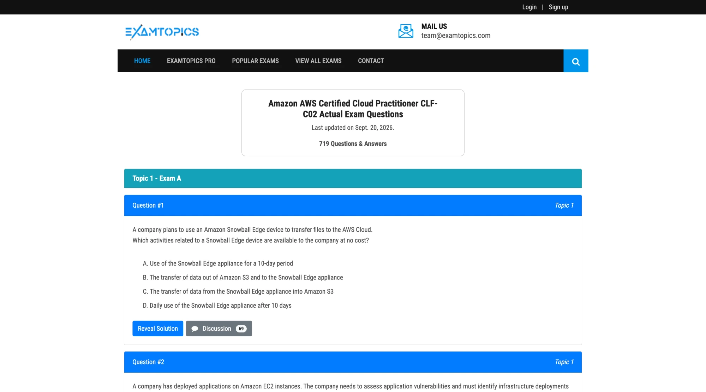
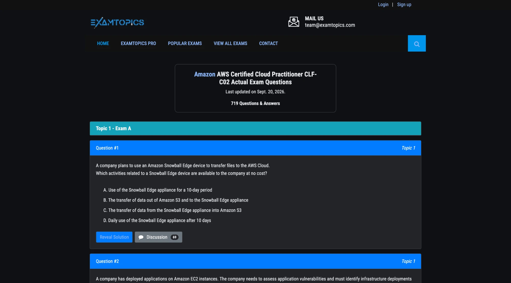
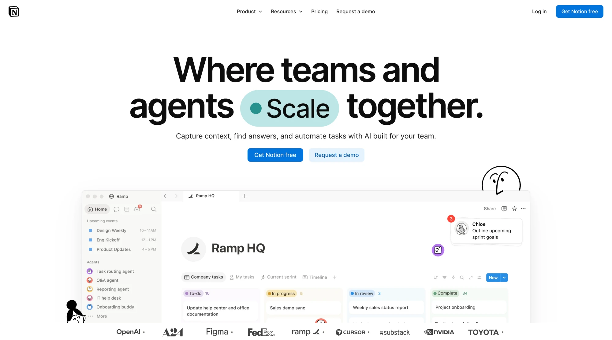
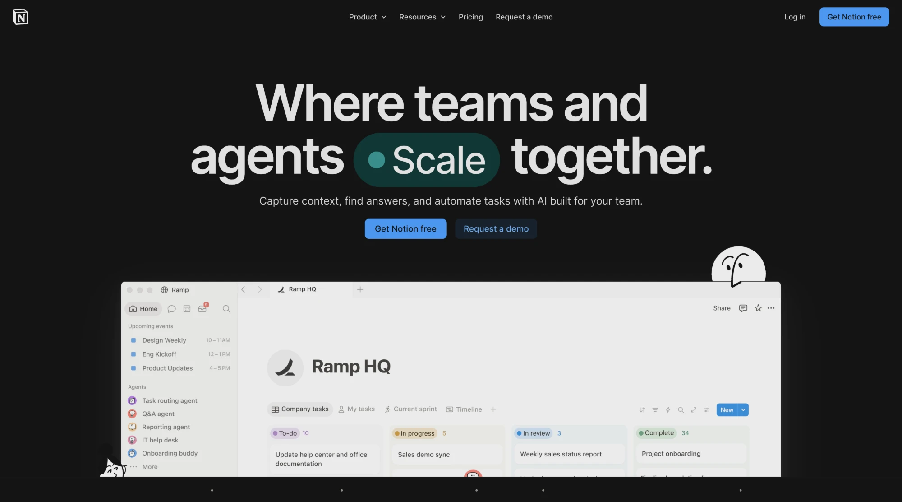
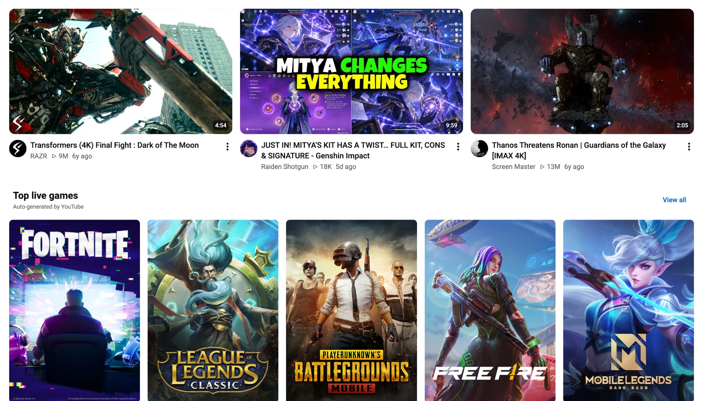
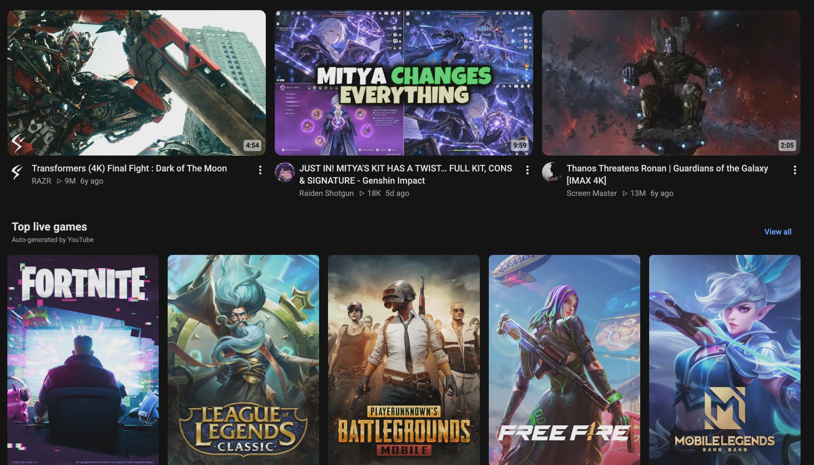
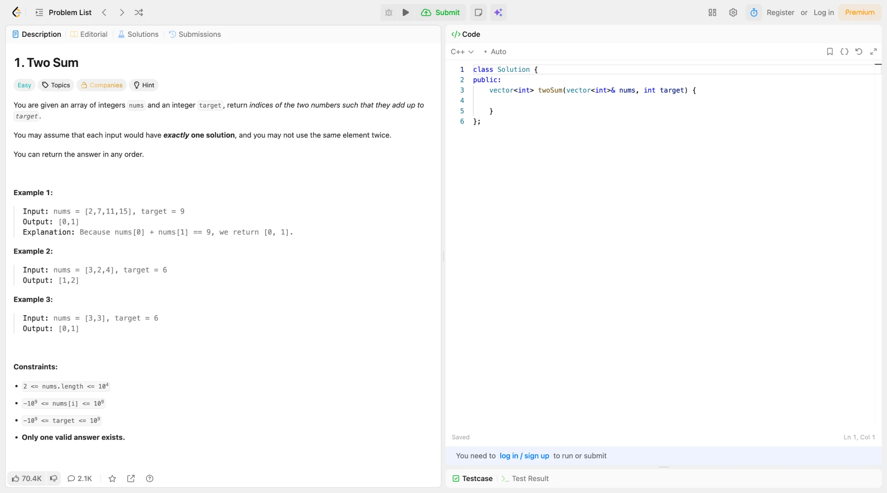
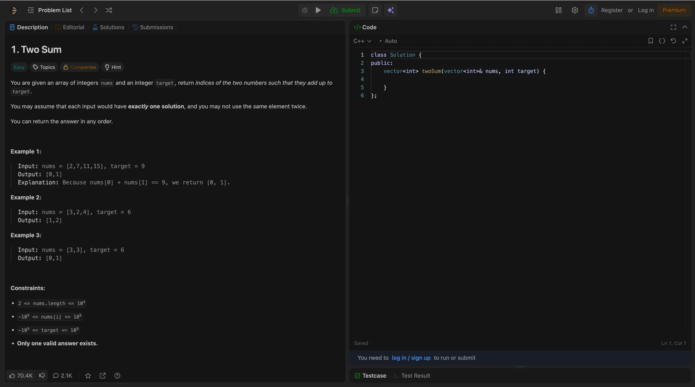

It knows when a site is already dark
On load, the Auto engine samples the page and picks the right approach for articles, apps and media-heavy layouts. If a site has its own dark theme, like YouTube or GitHub, it stays untouched.
ThemeSwitcher darkens websites, PDFs and local documents in Chrome. Text stays readable, photos keep their colors, and sites that already have a dark theme are left alone.
Simple color inverters turn photos into negatives and flash white on every load. ThemeSwitcher recolors the page the way its designer would have.
On load, the Auto engine samples the page and picks the right approach for articles, apps and media-heavy layouts. If a site has its own dark theme, like YouTube or GitHub, it stays untouched.
Open local files and web PDFs in a reader built on bundled PDF.js. Paper margins go dark while charts keep their colors. How the dark PDF reader works.
Choose pure black (#000000) for OLED screens or a soft slate (#0f1115). Eight built-in themes, a theme editor and per-site settings that sync through your Google account.
The dark background is applied at document_start, before the first paint, so new tabs never flash white.
No third-party analytics and no tracking pixels. Nothing leaves your device unless you opt in to the usage report or confirm a problem report.
Open a PDF in the built-in reader and the white paper turns dark while charts and images keep their colors. It runs offline, on your device.
Growth was strongest in the Americas, where subscriptions rose 18% over the quarter. Europe held steady, and Asia-Pacific recovered after a slow start.
Charts and images keep their colors. Only the paper and the text change.
Screenshots taken with the extension, not mockups. Pick a site.


Engine used: CSS Override Engine


Engine used: CSS Override Engine


Engine used: Auto Engine


Engine used: CSS Override Engine
An honest, technical comparison between ThemeSwitcher, browser experimental flags, and traditional inverters. For extension-to-extension detail, read the full comparison with Dark Reader.
| Capability | ThemeSwitcher | Chrome Flags (Auto Dark) | Generic Color Inverters |
|---|---|---|---|
| Per-Domain Settings Memory | ✓ Instant sync | ✗ Global only | ✓ Supported |
| Native Dark Mode Detection | ✓ Leaves dark sites intact | ✗ Inverts everything | ✗ Inconsistent |
| Offline PDF Dark Reader | ✓ Built-in PDF.js | ✗ No | ✗ Often breaks |
| Zero White Flashes | ✓ document_start binding | ✓ Native engine | ✗ Frequent flashes |
| Custom Background Colors | ✓ Hex color picker | ✗ Hardcoded algorithm | ✗ Limited sliders |
| Page Reload Required | ✓ No (Instant Toggle) | ✗ Browser restart | ✓ No |
| Privacy Guarantee | ✓ Local-first (MIT) | ✓ Built-in | ✗ Varies by publisher |
Everything you need to know about ThemeSwitcher, privacy, and how it works.
2,500+ weekly users and 6,000+ in total on the Chrome Web Store (developer dashboard). Install trends below are tracked independently by Chrome-Stats.
Install ThemeSwitcher and your next late-night read, PDF or doc is easy on the eyes.
Add to Chrome, free